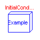
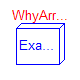
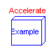
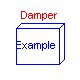
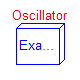
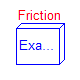
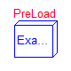
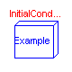
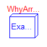
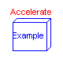
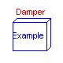
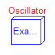
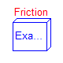
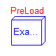
This package contains example models to demonstrate the usage of the Translational package. Open the models and simulate them according to the provided description in the models. The following examples are present:
SignConvention Examples for the used sign conventions using simple, basic elements InitialConditions Setting of initial conditions Accelerate Use of model accelerate Damper Use of damper elements Oscillator Oscillator demonstrates the use of initial conditions Sensors Sensors for translational systems Friction Stribeck friction characteristics PreLoad Positioning of a spool using ElastoGap models
| Name | Description |
|---|---|
| SignConvention | Examples for the used sign conventions. |
| InitialConditions | Setting of initial conditions |
| WhyArrows | Use of arrows in Mechanics.Translational |
| Accelerate | Use of model accelerate. |
| Damper | Use of damper models. |
| Oscillator | Oscillator demonstrates the use of initial conditions. |
| Sensors | Sensors for translational systems. |
| Friction | Use of model Stop |
| PreLoad | Preload of a spool using ElastoGap models. |
Modelica.Mechanics.Translational.Examples.SignConvention

If all arrows point in the same direction a positive force results in a positive acceleration a, velocity v and position s.
For a force of 1 N and a mass of 1 Kg this leads to
a = 1 m/s2
v = 1 m/s after 1 s (SlidingMass1.v)
s = 0.5 m after 1 s (SlidingMass1.s)
The acceleration is not available for plotting.
System 1) and 2) are equivalent. It doesn't matter whether the force pushes at flange_a in system 1 or pulls at flange_b in system 2.
It is of course possible to ignore the arrows and connect the models in an arbitrary way. But then it is hard see in what direction the force acts.
In the third system the two arrows are opposed which means that the force acts in the opposite direction (in the same direction as in the two other examples).
Release Notes:
encapsulated model SignConvention
"Examples for the used sign conventions."
import Modelica.Icons;
import Modelica.Blocks.Sources;
import Modelica.Mechanics.Translational;
extends Icons.Example;
Translational.SlidingMass SlidingMass1(
L=1);
Translational.Force Force1;
Sources.Constant Constant1;
Translational.SlidingMass SlidingMass2(
L=1);
Translational.Force Force2;
Sources.Constant Constant2;
Translational.SlidingMass SlidingMass3(
L=1);
Translational.Force Force3;
Sources.Constant Constant3;
equation
connect(Constant1.y, Force1.f);
connect(Constant2.y, Force2.f);
connect(Force3.f, Constant3.y);
connect(Force1.flange_b, SlidingMass1.flange_a);
connect(Force2.flange_b, SlidingMass2.flange_b);
connect(SlidingMass3.flange_b, Force3.flange_b);
end SignConvention;
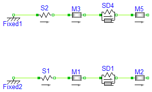
There are several ways to set initial conditions.
In the first system the position of the sliding mass m3 was defined
by using the modifier s(start=4.5), the position of m5 by s(start=12.5).
These positions were chosen such that the system is a rest. To calculate
these values start at the left (Fixed1) with a value of 1 m. The spring
has an unstreched length of 2 m and m3 an length of 3 m, which leads to
1 m (Fixed1)
+ 2 m (Spring S2)
+ 3/2 m (half of the length of SlidingMass m3)
-------
4,5 m = s(start = 4.5) for m3
+ 3/2 m (half of the length of SlidingMass m3)
+ 4 m (SpringDamper 4
+ 5/2 m (half of length of SlidingMass m5)
-------
12,5 m = s(start = 12.5) for m5
This selection of initial conditions has the effect that Dymola selects
those variables (m3.s and m5.s) as state variables.
In the second example the length of the springs are given as start values
but they cannot be used as state for pure springs (only for the spring/damper
combination). In this case the system is not at rest.
Release Notes:
encapsulated model InitialConditions "Setting of initial conditions"
import Modelica.Icons;
import Modelica.Mechanics.Translational;
extends Icons.Example;
Translational.SlidingMass M3(
L=3, s(start=4.5));
Translational.Spring S2(
s_rel0=2, c=1e3);
Translational.Fixed Fixed1(
s0=1);
Translational.SpringDamper SD4(
s_rel0=4, c=111);
Translational.SlidingMass M5(
L=5, s(start=12.5));
Translational.SlidingMass M1(
L=1);
Translational.Spring S1(
s_rel0=1,
c=1e3,
s_rel(start=1));
Translational.Fixed Fixed2(
s0=-1);
Translational.SpringDamper SD1(
s_rel0=1,
c=111,
s_rel(start=1));
Translational.SlidingMass M2(
L=2);
equation
connect(Fixed1.flange_b, S2.flange_a);
connect(S2.flange_b, M3.flange_a);
connect(M3.flange_b, SD4.flange_a);
connect(SD4.flange_b, M5.flange_a);
connect(Fixed2.flange_b, S1.flange_a);
connect(S1.flange_b, M1.flange_a);
connect(M1.flange_b, SD1.flange_a);
connect(SD1.flange_b, M2.flange_a);
end InitialConditions;
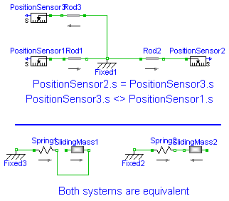
When using the models of the translational sublibrary it is recommended to make sure that all arrows point in the same direction because then all component have the same reference system. In the example the distance from flange_a of Rod1 to flange_b of Rod2 is 2 m. The distance from flange_a of Rad1 to flange_b of Rod3 is also 2 m though it is difficult to see that. Without the arrows it would be almost impossible to notice. That all arrows point in the same direction is a sufficient condition for an easy use of the library. There are cases where horizontally flipped models can be used without problems.
Release Notes:
encapsulated model WhyArrows
"Use of arrows in Mechanics.Translational"
import Modelica.Icons;
import Modelica.Mechanics.Translational;
extends Icons.Example;
Translational.Fixed Fixed1;
Translational.Rod Rod1(
L=1);
Translational.Rod Rod2(
L=1);
Translational.Rod Rod3(
L=1);
Translational.Sensors.PositionSensor PositionSensor2;
Translational.Sensors.PositionSensor PositionSensor1;
Translational.Sensors.PositionSensor PositionSensor3;
Translational.Fixed Fixed3(
s0=-1.9);
Translational.Spring Spring1(
s_rel0=2, c=11);
Translational.SlidingMass SlidingMass1(
L=2);
Translational.Fixed Fixed2(
s0=-1.9);
Translational.Spring Spring2(
s_rel0=2, c=11);
Translational.SlidingMass SlidingMass2(
L=2);
equation
connect(Rod1.flange_b, Fixed1.flange_b);
connect(Fixed1.flange_b, Rod2.flange_a);
connect(Rod3.flange_a, Fixed1.flange_b);
connect(Rod2.flange_b, PositionSensor2.flange_a);
connect(PositionSensor1.flange_a, Rod1.flange_a);
connect(PositionSensor3.flange_a, Rod3.flange_b);
connect(Fixed3.flange_b, Spring1.flange_a);
connect(Spring1.flange_b, SlidingMass1.flange_b);
connect(Fixed2.flange_b, Spring2.flange_a);
connect(Spring2.flange_b, SlidingMass2.flange_b);
end WhyArrows;
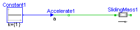
encapsulated model Accelerate "Use of model accelerate."
import Modelica.Icons;
import Modelica.Blocks.Sources;
import Modelica.Mechanics.Translational;
extends Icons.Example;
Translational.Accelerate Accelerate1;
Translational.SlidingMass SlidingMass1(
L=1);
Sources.Constant Constant1;
equation
connect(Constant1.y, Accelerate1.a);
connect(Accelerate1.flange_b, SlidingMass1.flange_a);
end Accelerate;
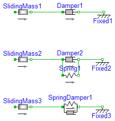
Release notes: -------------- 2001 - 7 - 14: Damping parameters increased (from 1 to 25)
encapsulated model Damper "Use of damper models."
import Modelica.Icons;
import Modelica.Mechanics.Translational;
extends Icons.Example;
Translational.SlidingMass SlidingMass1(
L=1,
v(start=10),
s(start=3));
Translational.Damper Damper1(
d=25);
Translational.Fixed Fixed1(
s0=4.5);
Translational.SlidingMass SlidingMass2(
L=1,
v(start=10),
s(start=3));
Translational.Damper Damper2(
d=25);
Translational.Fixed Fixed2(
s0=4.5);
Translational.SlidingMass SlidingMass3(
L=1,
v(start=10),
s(start=3));
Translational.Fixed Fixed3(
s0=4.5);
Translational.Spring Spring1(
s_rel0=1);
Translational.SpringDamper SpringDamper1(
s_rel0=1, d=25);
equation
connect(SlidingMass1.flange_b, Damper1.flange_a);
connect(Damper1.flange_b, Fixed1.flange_b);
connect(SlidingMass2.flange_b, Damper2.flange_a);
connect(Damper2.flange_b, Fixed2.flange_b);
connect(Damper2.flange_b, Spring1.flange_b);
connect(Damper2.flange_a, Spring1.flange_a);
connect(SlidingMass3.flange_b, SpringDamper1.flange_a);
connect(SpringDamper1.flange_b, Fixed3.flange_b);
end Damper;
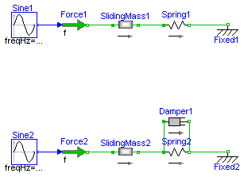
A spring - mass system is a mechanical oscillator. If no
damping is included and the system is excited at resonance
frequency infinite amplitudes will result.
The resonant frequency is given by
omega_res = sqrt(c / m)
with: c spring stiffness
m mass
To make sure that the system is initially at rest the initial
conditions s(start=0) and v(start=0) for the SlindingMass
are set.
If damping is added the amplitudes are bounded.
Release Notes:
encapsulated model Oscillator
"Oscillator demonstrates the use of initial conditions."
import Modelica.Icons;
import Modelica.Blocks.Sources;
import Modelica.Mechanics.Translational;
extends Icons.Example;
Translational.SlidingMass SlidingMass1(
L=1,
s(start=-0.5),
v(start=0.0));
Translational.Spring Spring1(
s_rel0=1, c=10000);
Translational.Fixed Fixed1(
s0=1.0);
Translational.Force Force1;
Sources.Sine Sine1(
freqHz=15.9155);
Translational.SlidingMass SlidingMass2(
L=1,
s(start=-0.5),
v(start=0.0));
Translational.Spring Spring2(
s_rel0=1, c=10000);
Translational.Fixed Fixed2(
s0=1.0);
Translational.Force Force2;
Sources.Sine Sine2(
freqHz=15.9155);
Translational.Damper Damper1(
d=10);
equation
connect(Sine1.y, Force1.f);
connect(Sine2.y, Force2.f);
connect(Force1.flange_b, SlidingMass1.flange_a);
connect(Spring1.flange_b, Fixed1.flange_b);
connect(SlidingMass1.flange_b, Spring1.flange_a);
connect(Force2.flange_b, SlidingMass2.flange_a);
connect(Spring2.flange_a, Damper1.flange_a);
connect(SlidingMass2.flange_b, Spring2.flange_a);
connect(Damper1.flange_b, Spring2.flange_b);
connect(Spring2.flange_b, Fixed2.flange_b);
end Oscillator;
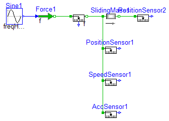
These sensors measure force f in N position s in m velocity v in m/s acceleration a in m/s2 Dhe measured velocity and acceleration is independent on the flange the sensor is connected to. The position depends on the flange (flange_a or flange_b) and the length L of the component. Plot PositionSensor1.s, PositionSensor2.s and SlidingMass1.s to see the difference.
Release Notes:
encapsulated model Sensors "Sensors for translational systems."
import Modelica.Icons;
import Modelica.Blocks.Sources;
import Modelica.Mechanics.Translational;
extends Icons.Example;
Translational.Sensors.ForceSensor ForceSensor1;
Translational.Sensors.SpeedSensor SpeedSensor1;
Translational.Sensors.PositionSensor PositionSensor1;
Translational.Sensors.AccSensor AccSensor1;
Translational.SlidingMass SlidingMass1(
L=1);
Translational.Force Force1;
Sources.Sine Sine1(
amplitude=10, freqHz=4);
Translational.Sensors.PositionSensor PositionSensor2;
equation
connect(Sine1.y, Force1.f);
connect(ForceSensor1.flange_b, SlidingMass1.flange_a);
connect(SlidingMass1.flange_b, PositionSensor2.flange_a);
connect(Force1.flange_b, ForceSensor1.flange_a);
connect(SlidingMass1.flange_a, PositionSensor1.flange_a);
connect(PositionSensor1.flange_a, SpeedSensor1.flange_a);
connect(SpeedSensor1.flange_a, AccSensor1.flange_a);
end Sensors;
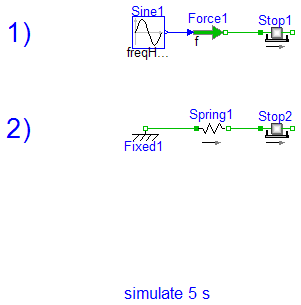
1) Simulate and then plot Stop1.f as a function of Stop1.v This gives the Stribeck curve. 2) This model gives an example for a hard stop. However there can arise some problems with the used modeling approach (use of Reinit, convergence problems). In this case use the ElastoGap to model a stop (see example Preload).
Release Notes:
encapsulated model Friction "Use of model Stop"
import Modelica.Icons;
import Modelica.Blocks.Sources;
import Modelica.Mechanics.Translational;
extends Icons.Example;
Translational.Stop Stop1(
L=1);
Translational.Force Force1;
Sources.Sine Sine1(
amplitude=25, freqHz=0.25);
Translational.Stop Stop2(
L=1,
smax=0.9,
smin=-0.9,
F_Coulomb=3,
F_Stribeck=5,
s(start=0),
v(start=-5));
Translational.Spring Spring1(
s_rel0=1, c=500);
Translational.Fixed Fixed1(
s0=-1.75);
equation
connect(Sine1.y, Force1.f);
connect(Force1.flange_b, Stop1.flange_a);
connect(Fixed1.flange_b, Spring1.flange_a);
connect(Spring1.flange_b, Stop2.flange_a);
end Friction;
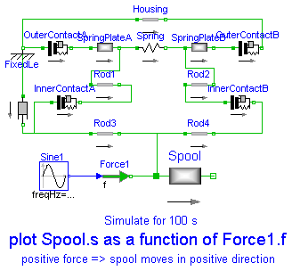
When designing hydraulic valves it is often necessary to hold the spool in a certain position as long as an external force is below a threshold value. If this force exceeds the treshold value a linear relation between force and position is desired. There are designs that need only one spring to accomplish this task. Using the ElastoGap elements this design can be modelled easily. Drawing of spool.


Spool position s as a function of working force f.

Release Notes:
encapsulated model PreLoad
"Preload of a spool using ElastoGap models."
import Modelica.Icons;
import Modelica.Blocks.Sources;
import Modelica.Mechanics.Translational;
extends Icons.Example;
Translational.ElastoGap InnerContactA(
s_rel0=1e-3,
c=1000e3,
d=250);
Translational.ElastoGap InnerContactB(
s_rel0=1e-3,
c=1000e3,
d=250);
Translational.SlidingMass Spool(
L=0.19,
m=0.150,
s(start=14.75e-3));
Translational.Fixed FixedLe(
s0=-95.5e-3);
Translational.SlidingMass SpringPlateA(
L=2e-3,
m=10e-3,
s(start=-93e-3));
Translational.SlidingMass SpringPlateB(
L=2e-3,
m=10e-3,
s(start=-69.25e-3));
Translational.Spring Spring(
c=20e3, s_rel0=25e-3);
Translational.ElastoGap OuterContactA(
s_rel0=1.5e-3,
c=1000e3,
d=250);
Translational.ElastoGap OuterContactB(
c=1000e3,
d=250,
s_rel0=1.5e-3);
Translational.Rod Rod1(
L=7e-3);
Translational.Damper Friction(
d=2500);
Translational.Force Force1;
Translational.Rod Housing(
L=30.5e-3);
Translational.Rod Rod3(
L=5.75e-3);
Translational.Rod Rod4(
L=5.75e-3);
Translational.Rod Rod2(
L=7e-3);
Sources.Sine Sine1(
amplitude=150, freqHz=0.01);
equation
connect(OuterContactA.flange_b, SpringPlateA.flange_a);
connect(SpringPlateA.flange_b, Spring.flange_a);
connect(Spring.flange_b, SpringPlateB.flange_a);
connect(SpringPlateB.flange_b, OuterContactB.flange_a);
connect(FixedLe.flange_b, OuterContactA.flange_a);
connect(Friction.flange_a, FixedLe.flange_b);
connect(FixedLe.flange_b, Housing.flange_a);
connect(OuterContactB.flange_b, Housing.flange_b);
connect(SpringPlateA.flange_b, Rod1.flange_a);
connect(InnerContactA.flange_a, Rod3.flange_a);
connect(InnerContactA.flange_b, Rod1.flange_b);
connect(Rod2.flange_a, InnerContactB.flange_a);
connect(Rod4.flange_b, InnerContactB.flange_b);
connect(Friction.flange_b, Rod3.flange_a);
connect(Sine1.y, Force1.f);
connect(Force1.flange_b, Spool.flange_a);
connect(Rod3.flange_b, Rod4.flange_a);
connect(Rod2.flange_b, SpringPlateB.flange_a);
connect(Spool.flange_a, Rod4.flange_a);
end PreLoad;